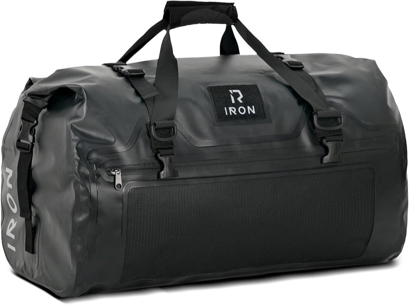
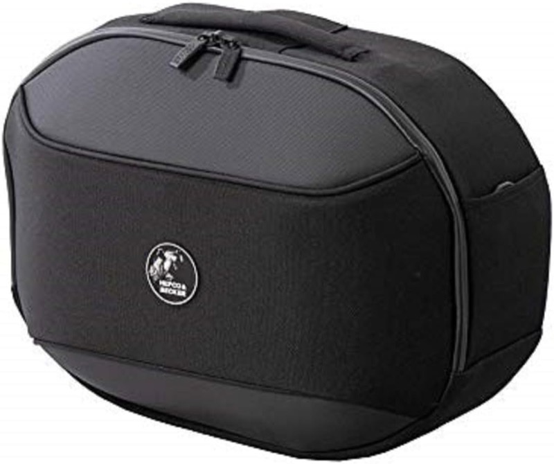
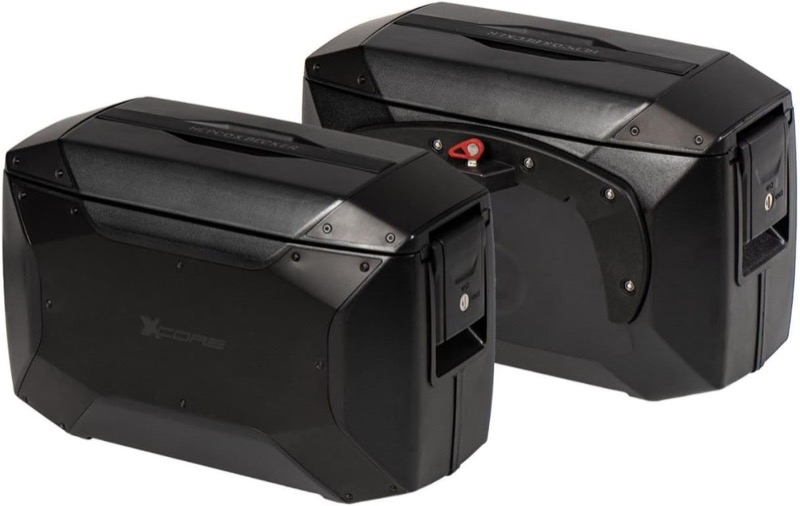
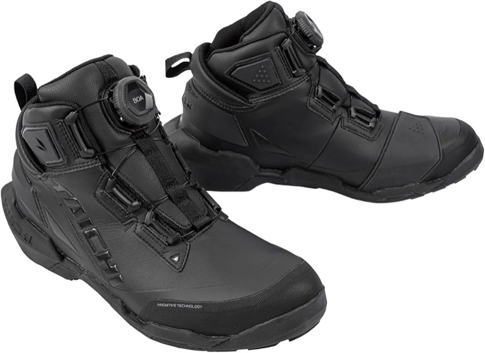
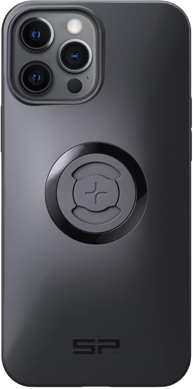
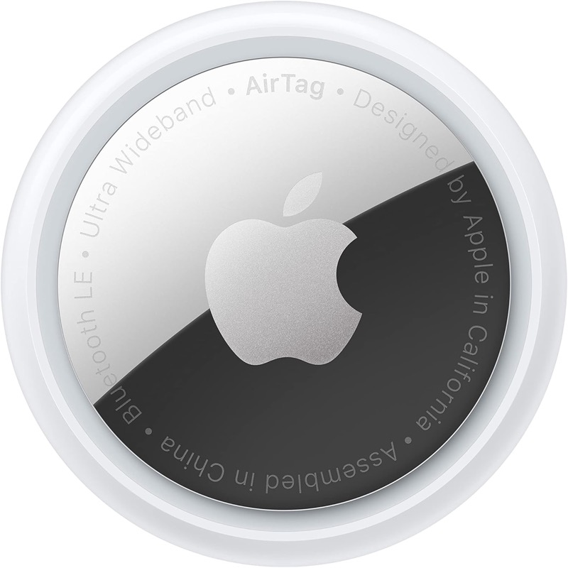
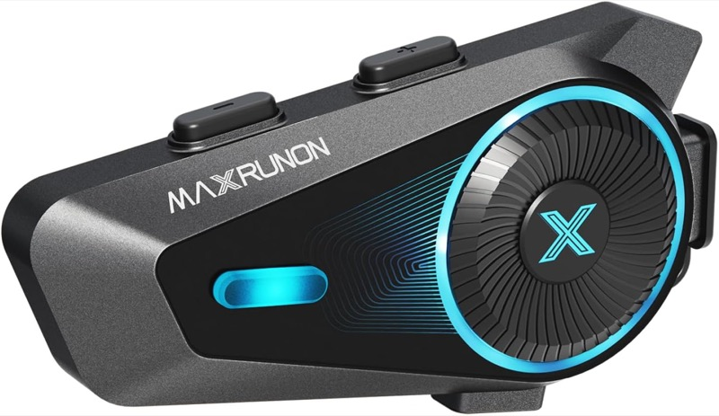

He recorrido Hokkaidō dos veces en moto —una en SR400 y otra en XSR900—, unos 3.500 km en total. Cosas que en Honshū no me preocupaban se volvieron problemas en Hokkaidō, y otras que daba por imprescindibles las acabé sin tocar. Aquí dejo, por categorías, el equipo que realmente importó tras pasarlo por uso real.
Relacionado: → Tres viajes a Hokkaidō (rutas y alojamientos)
📋 Índice
① Bolsas y carga
Las distancias en Hokkaidō son largas y el número de noches alto. La opción realista son alforjas + bolsa de asiento.

Bolsa de asiento IRON JIA'S (Touring Bag)
Impermeabilidad perfecta: el contenido aguantó la lluvia. Fácil de montar y, gracias a una válvula de aire, se puede comprimir para que no abulte. Con 50 L caben holgadamente las cosas para una ruta larga.
Ver en Amazon
Hepco & Becker Soft Bag Street (640603-0001)
Se monta fácilmente sobre un soporte lateral C-Bow y va estable rodando. La bolsa en sí no es estanca, pero la funda de lluvia incluida resuelve la lluvia y, con la funda interior, el contenido no se moja con un aguacero razonable. 24 L sumando ambos lados; las usé combinadas con la bolsa de asiento.
Ver en Amazon
Hepco & Becker Side Case Xcore par (610295-0001)
Mismo estándar C-Bow, escalón superior frente a la bolsa blanda. Carcasa rígida de aluminio + policarbonato + PBT con buena resistencia al impacto, y la cerradura aporta tranquilidad real al alejarse en alojamientos o campings. 18 L por lado / 36 L en total —unas 1,5 veces lo de las bolsas blandas (12 L por lado / 24 L en total)—, ideal para viajes largos y vueltas serias por Hokkaidō. No es totalmente estanca, así que con lluvia se necesita protección interior. Ten en cuenta que cada lado pesa 2,8 kg, más que las blandas.
Ver en Amazon② Ropa
Hokkaidō tiene grandes cambios de temperatura. Aunque de día haya 20 °C, mañanas y noches pueden bajar de 10 °C. Hay que ir por capas.

RS TAICHI DRYMASTER Arrow Shoes RSS013
Botas de moto para todo tiempo cuya parte superior usa el material impermeable y transpirable propio de TAICHI, «DRYMASTER». La rueda BOA permite ponerse y quitarse las botas en un instante; la suela extendida hacia el exterior y los protectores interiores y exteriores amortiguan los impactos al tobillo. La suela es ligera y cómoda al andar: sirven incluso para pasear por sitios turísticos. En uso real, la impermeabilidad aguanta la lluvia ligera sin que entre agua. En aguaceros fuertes acaba calando, así que para lluvia muy intensa una bota de agua tradicional es más fiable. Como no inmovilizan el tobillo de forma rígida, andar por la ciudad o por escaleras y senderos turísticos es cómodo. No tienen esa sensación de «cansa andar» de muchas botas de moto, lo que permite seguir con ellas tras bajarse de la moto.
Ver en Amazon④ Equipo de camping
El equipo de camping está cubierto en detalle en otro artículo.
▶ Equipo para acampada en moto en solitario: tienda, saco y aislante
⑤ Gadgets
En el este y el norte de Hokkaidō hay zonas con muy pocas tiendas, ni siquiera convenience stores. Cargar el móvil y tener navegador son la línea vital.

SP Connect SPC+ Smartphone Case (para iPhone 13 Pro Max / 12 Pro Max)
SP Connect es lo que más confianza me da para fijar el móvil. Sistema modular que combina una funda específica con un soporte; el conector SPC+ de la parte trasera de la funda encaja en el soporte de la moto con un clic. Hasta ahora nunca se ha soltado rodando, y poner y quitar es de un solo gesto con una mano. Compatible con MagSafe, carga inalámbrica y estructura amortiguadora: vale también como funda de uso diario, no solo para navegación. Hay que comprar la funda específica de SP Connect, diseñada por modelo de teléfono. Si no eliges la que corresponde a tu iPhone / Android, no encaja.
⚠️ También necesitas el soporte para la moto, aparte. Funda + soporte: ese es el sistema completo.
▶ Soporte recomendado: SP Connect Moto Mount Pro (53138). Mecanizado en aluminio, fijación al manillar, resistente al agua, montaje y desmontaje rápido y enganche de la funda con un clic. «Amazon's Choice» con 4,7: el estándar.
▶ Combínalo con el módulo antivibración: SP Connect Anti-Vibration Module (52829). Adaptador antivibración que va entre el soporte y la funda y protege la cámara del iPhone (OIS) de las vibraciones del motor. En iPhone 12 o posterior y moto, considéralo prácticamente imprescindible. Aluminio + goma, valoración 4,6.
Ver en Amazon
AirTag
Me salvó literalmente cuando perdí la cartera en Esashi. Tener uno en la llave de la moto, en la cartera y en cada bolsa de equipaje da un margen real de seguridad.
Ver en Amazon
MAXRUNON D10 Mesh Motorcycle Intercom (versión actualizada con Mesh)
Barato, pero hace todo lo que necesito. Navegación de Google Maps por voz, música, radio e incluso conversaciones con ChatGPT, todo desde un mismo aparato. Si lo dejas en modo conversación, puedes charlar mientras conduces y preguntar cosas que no sepas en el momento, convirtiendo el viaje en tiempo de aprendizaje. Buen compañero para días largos en moto.
▶ Con la comunicación Mesh, en grupo se mantiene una conexión más estable que por Bluetooth. Con OTA y app dedicada, se pueden esperar nuevas funciones tras la compra. Precio de ¥7.980 con descuentos adicionales por cupón (datos a abril de 2026): muy contenido.
⚠️ Nota: el modo de voz avanzado (Advanced Voice Mode) de ChatGPT tiene límites de uso. El plan gratuito ronda los 15 min/mes; en Plus, unos 30–45 min/día; superado el límite, vuelve al modo de voz normal, más lento. Si quieres usarlo a fondo en jornadas largas, considera el plan Pro (voz ilimitada) o asume que después del límite usarás la voz estándar.
Ver en Amazon⑥ Antiosos
A la entrada de la península de Shiretoko, un panel oficial dice «Se recomienda llevar spray antiosos». Si vas a rodar por Hokkaidō, especialmente por el este o por Shiretoko, es equipo a considerar.

UDAP 12HP Bear Spray (con funda)
Alcance ~9 m, ~4 s de descarga. La funda permite llevarlo en el cinturón. No se puede subir al avión: en ferry, mejor comprarlo antes; o conseguirlo allí.
Ver en Amazon▶ Artículo completo: por qué llevar spray antiosos en una ruta por Shiretoko
Resumen
Hokkaidō es otro país comparado con Honshū. Hay osos pardos, los cambios de temperatura son grandes y hay pocas gasolineras. Pero, si llevas el equipo para asumirlo, llegas a paisajes y carreteras que en Honshū no existen.
Si esta lista ayuda aunque sea un poco a alguien que vaya a Hokkaidō a prepararse mejor, ya merece la pena. Para preguntas o recomendaciones de equipo: info@camino-libre.jp.